Interstate is a san-serif font that was designed by Tobia Frere-Jones in the 1993-1999 time frame. The font was licensed by the Font Bureau. Interstate was modeled heavily off of Style Type E, which was a signage font drawn for the US by Theodore Forbes. The wide spacing of Interstate makes it best suited for display usage in print. Some notable characteristics of the font are the terminals of ascending and descending strokes that are cut at an angle, and the curved stroke terminals that are drawn at 90 degree angle to stroke, positioning them at an angle to the baseline.
URW DIN was designed by Volker Schnebel and was created in 1984. It has up to 48 typefaces, has 20 variations and can be used for 21 languages. The font family was first used on railroad cars in Germany. It was then commissioned to be used for German public administration and signage. It is best known for the usability to convey clear messages whether that’s through headlines or fine print. The typeface allows designers to create designs that are fun, but also professional. One reason for its popularity is how it can be used in any context. That is why DIN has been so successful as a font.
Comparison
Similarities
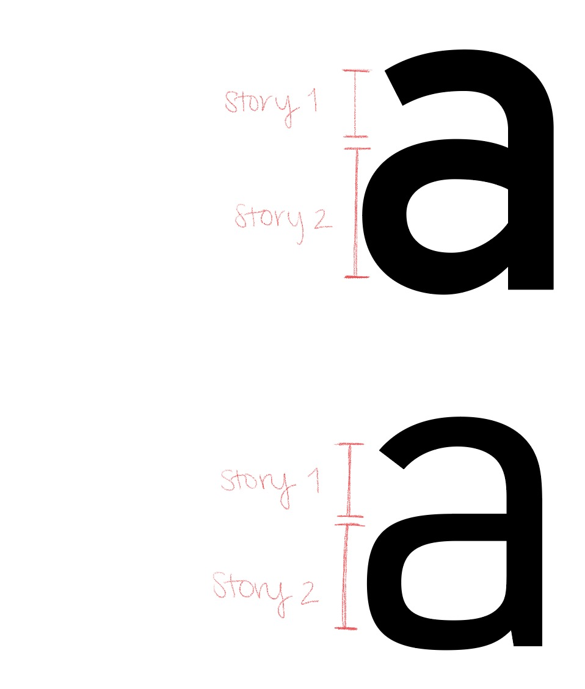
Interstate on the top. URW DIN on the bottom.
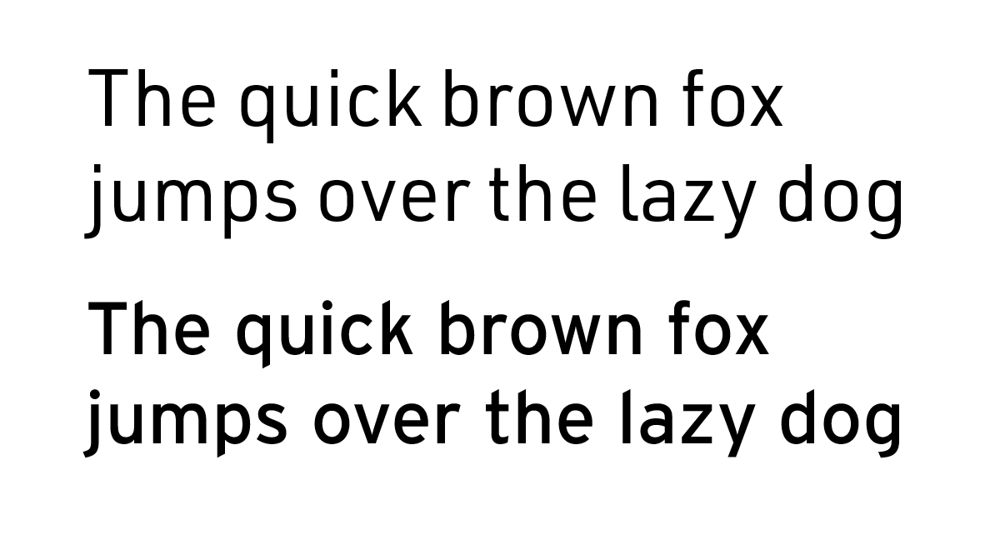
The top sentence uses URW DIN and the bottom sentence is using Interstate.Both are versatile typefaces that can be used for print and on-screen.
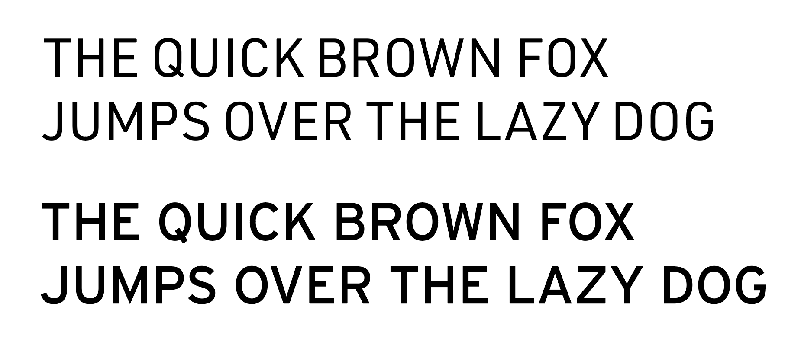
Interstate (bottom) and URW DIN (top) are both commonly used for signage and general branding. The uppercase styles allow the typefaces to convey clear messages.
Differences
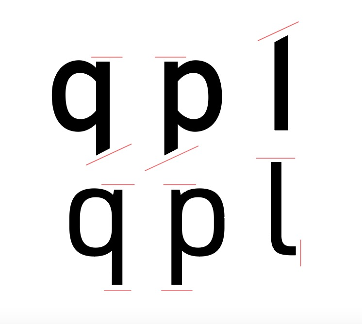
Comparing the uppercase 'E' between Interstate and URW DIN, the ligatures have different distances. In DIN (right), the ligature reaches the width of the top and bottom stroke. In comparison, the ligature in Interstate (left) is shorter than the letter's width.
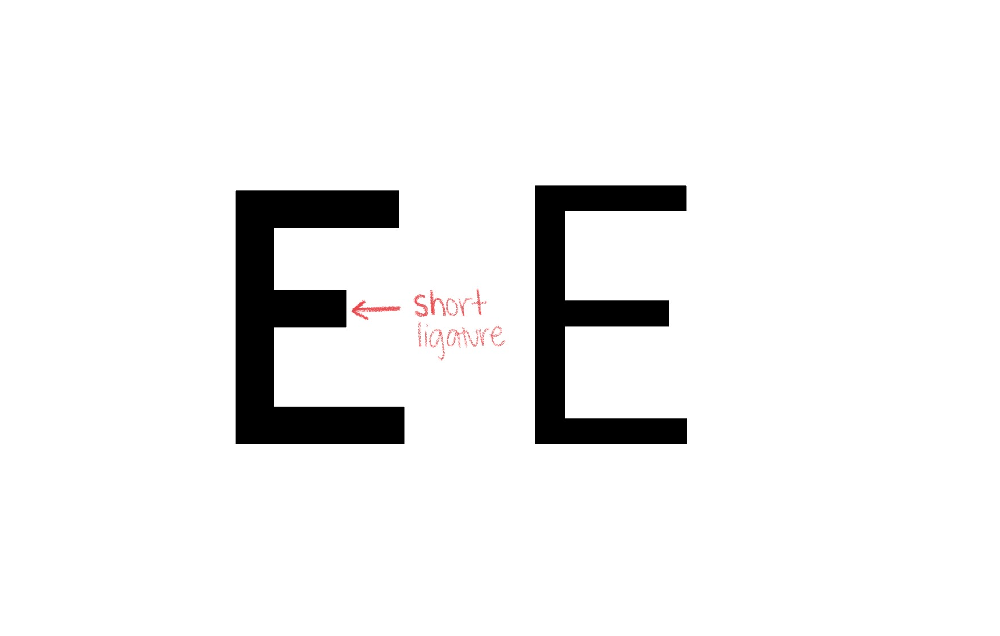
Interstate differs from URW DIN in the sense that some of the ascenders or descenders utilize a slant rather than a straight line.
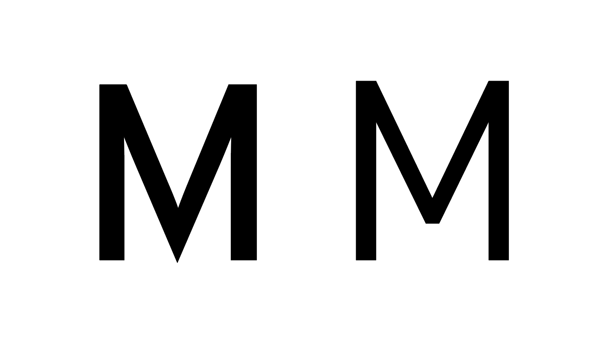
The middle stroke in an uppercase 'M' touches the baseline in Interstate (left), but the middle stroke for URW DIN (right) floats above the baseline.
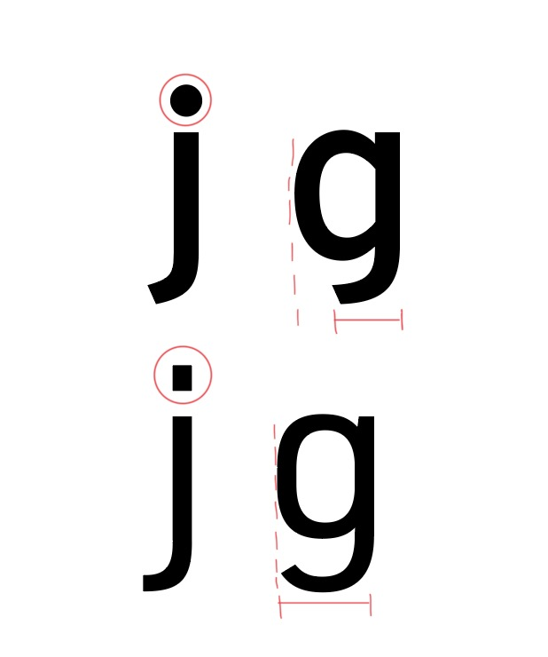
The descenders on the Interstate typeface fall short of the width of the letter. In comparison, the URW DIN descender matches the width of the letter.
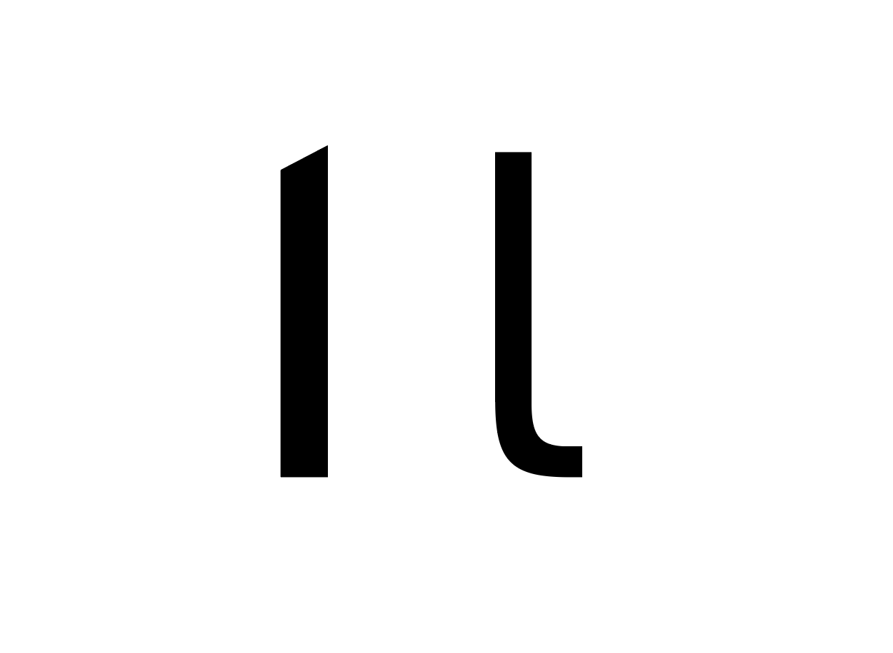
The strokes in Interstate (left) have a heavier weight compared to URW DIN (right).
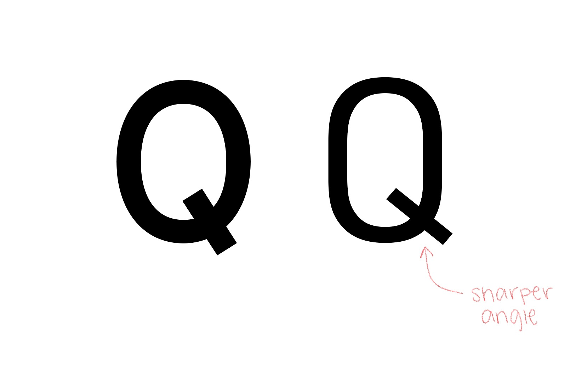
In the uppercase letter 'Q', the tails are written in a different angle. The Interstate (left) tail's angle is more vertical whereas the URW DIN (right) tail is more horizontally angled.
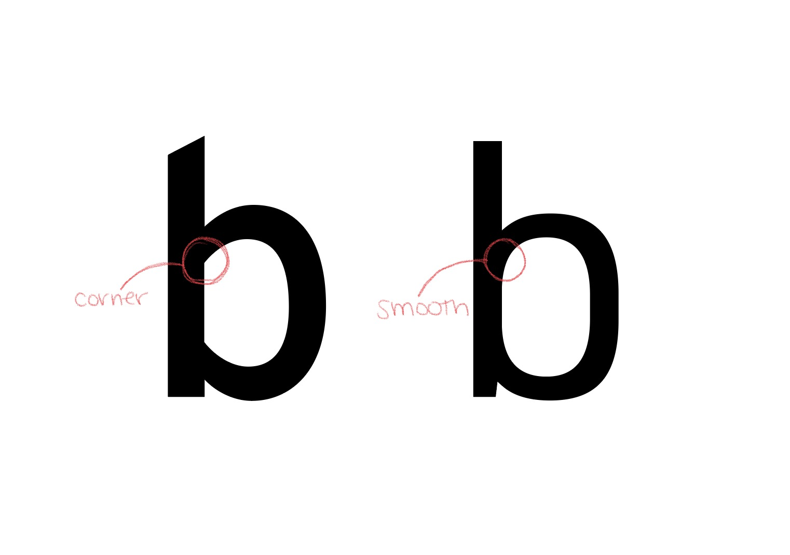
With Interstate on the left and URW DIN on the right, the counters in the letter, "b" differ. The counter in Interstate is not fully rounded and has sharp corners. URW DIN is fully rounded.
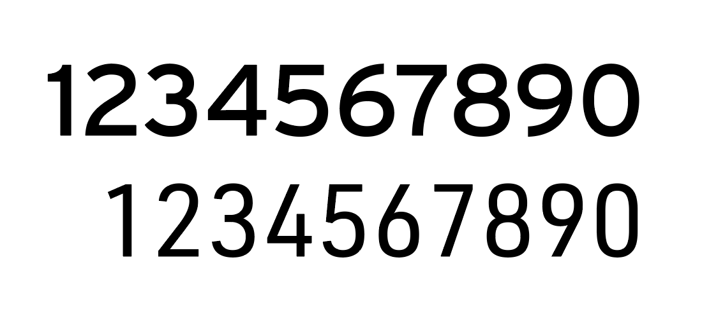
The Interstate numbers (top) and overall typeface have a wider width and shorter height. While the URW DIN numbers (bottom) are slimmer and appear elongated.
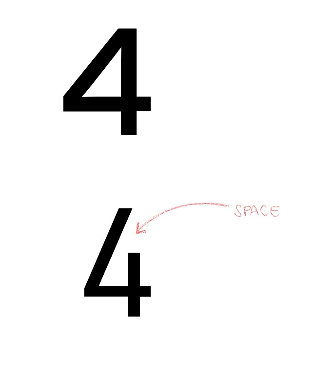
In the numerical font of the typefaces, the 4 in Interstate (top) has no openings while URW DIN (bottom) is left open.
Examples and visual references
Interstate is a versatile typeface that can be used for signage and fine print. It is mostly used for general branding and commercial printing. The examples show Interstate in both contexts of on-screen and print.
Because of its versatility, Interstate is used to convey clear messages using large signage.Interstate used for Sesame Street general branding.
URW DIN was originally used in ralroad signage and railroad cars in Germany. Due to this nature, the typeface conveys clear messages whether it be through headlines or fine print. The pictures below exemplify the German license plates in which URW DIN is used and also in its original railroad signage.
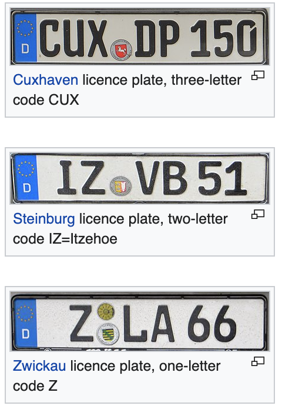
Pictured above is URW in use for German license plates.
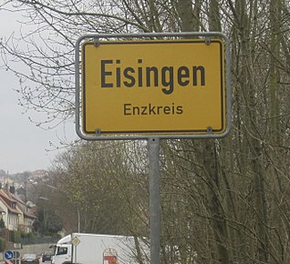
URW DIN in general street sign.